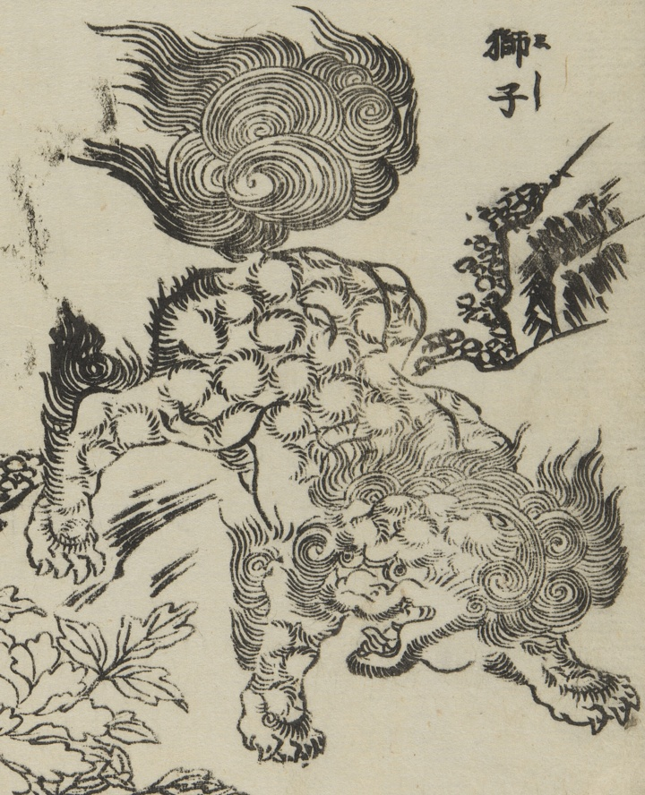

目を見開き、鋭い牙と爪が生えている獣。百獣の長、天竺の猛獣であり、狻猊ともいう。
著作者：中村惕齋・下河辺拾水／出典：親書誌：U426_nichibunken_0455：頭書増補訓蒙図彙大成；カシラガキゾウホキンモウズイタイセイ／日付：2025／資源識別子：U426_nichibunken_0455_0007_0000
Copyright (c)2010- International Research Center for Japanese Studies, Kyoto, Japan. All rights reserved.